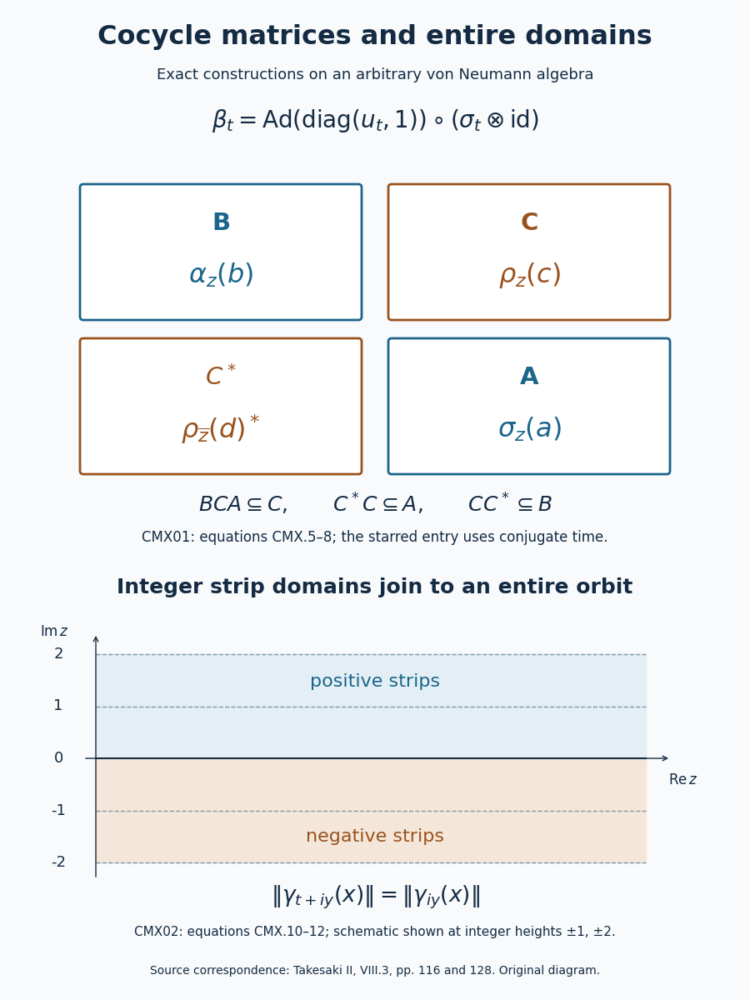

Cocycle matrices and entire strip domains
A unitary cocycle can be placed in one diagonal entry of a matrix. Conjugating by that matrix puts the original automorphisms, their perturbation and the twisted linear motion inside a single automorphism group. A second useful construction joins bounded strips to recover an entire orbit from its integer imaginary-time domains.
The first construction uses the cocycle and analytic-orbit conventions of CX04. The second uses the normality, boundary uniqueness and strip gluing proved in AG01, with the scalar boundary argument of MA08. Both constructions apply on arbitrary von Neumann algebras.
An input cocycle as a matrix automorphism
Let \(\sigma\) be a pointwise sigma-strong* continuous automorphism group of a von Neumann algebra \(M\). Suppose \(u_t\in M\) is a sigma-strong* continuous unitary family satisfying \[ u_{s+t}=u_s\sigma_s(u_t),\qquad \alpha_t(x)=u_t\sigma_t(x)u_t^*,\qquad \rho_t(x)=u_t\sigma_t(x). \tag{CMX.1} \] The zero-parameter identity implies \(u_0=1\). Write \(\widetilde\sigma_t\) for entrywise application of \(\sigma_t\) on \(M_2(M)\), and set \[ d_t=\begin{pmatrix}u_t&0\\0&1\end{pmatrix},\qquad \beta_t=\operatorname{Ad}(d_t)\circ\widetilde\sigma_t. \tag{CMX.2} \] This defines a pointwise sigma-strong* continuous group of normal *-automorphisms. In fact \[ d_{s+t}=d_s\widetilde\sigma_s(d_t),\qquad \beta_s\beta_t(X) =d_s\widetilde\sigma_s(d_t)\widetilde\sigma_{s+t}(X) \widetilde\sigma_s(d_t)^*d_s^* =\beta_{s+t}(X). \tag{CMX.3} \] Each factor is a normal automorphism, and the inverse is \(\beta_{-t}\). Entrywise continuity and continuity of multiplication on bounded sets give the stated topology. Direct matrix multiplication yields \[ \beta_t\begin{pmatrix}b&c\\d^*&a\end{pmatrix} =\begin{pmatrix} \alpha_t(b)&\rho_t(c)\\ \rho_t(d)^*&\sigma_t(a) \end{pmatrix}. \tag{CMX.4} \] This construction only uses the given cocycle; it is available before reconstructing a weight with that cocycle.
Let \(A,B,C\) be the elements having operator-norm entire orbits for \(\sigma,\alpha,\rho\), respectively, and let \(C^*=\{c^*:c\in C\}\). Then the entire elements for \(\beta\) are exactly \[ (M_2(M))_{\mathrm{ent}}^\beta =\left\{\begin{pmatrix}b&c\\d^*&a\end{pmatrix}: b\in B,\ c,d\in C,\ a\in A\right\}. \tag{CMX.5} \] To prove this equality, first note that each matrix-entry extraction and each single-entry inclusion is a bounded complex-linear map. Thus a matrix orbit is norm-entire exactly when its four entry orbits are norm-entire. For the lower-left entry, an entire orbit of \(d\) gives the entire continuation \(z\mapsto\rho_{\bar z}(d)^*\). Conversely, if the lower-left orbit has an entire continuation \(G\), then \(z\mapsto G(\bar z)^*\) is an entire continuation of \(\rho_t(d)\). This proves both directions of (CMX.5), and the full continued formula is \[ \beta_z\begin{pmatrix}b&c\\d^*&a\end{pmatrix} =\begin{pmatrix} \alpha_z(b)&\rho_z(c)\\ \rho_{\bar z}(d)^*&\sigma_z(a) \end{pmatrix}. \tag{CMX.6} \] The conjugated parameter in the starred entry is essential for holomorphy.
For completeness, the entire space of an automorphism group is a *-algebra. If \(F_X,F_Y\) are entire orbits, their product is entire and agrees with the orbit of \(XY\) on the real line. Likewise \(F_X(\bar z)^*\) extends the orbit of \(X^*\). The identity theorem, tested against bounded linear functionals, proves these identifications. For fixed real \(s\), the identity \(\beta_sF_X(z)=F_X(s+z)\) follows in the same way. Therefore \(F_X(w+z)\), as a function of \(w\), is the entire orbit of \(F_X(z)\). This proves complex translation invariance and the group law on the entire space.
Apply these facts to the indicated single-entry matrices. Their products give \[ BCA\subseteq C,\qquad C^*C\subseteq A,\qquad CC^*\subseteq B, \tag{CMX.7} \] where product inclusions include finite linear spans. Continuing the three real product identities gives \[ \begin{aligned} \rho_z(bca)&=\alpha_z(b)\rho_z(c)\sigma_z(a),\\ \sigma_z(c^*d)&=\rho_{\bar z}(c)^*\rho_z(d),\\ \alpha_z(cd^*)&=\rho_z(c)\rho_{\bar z}(d)^*. \end{aligned} \tag{CMX.8} \] Every continuation on the right is norm-entire and has the required real values, so the same identity theorem proves all three formulas.
As a check on the signs, take \(M=\mathbb C\), \(\sigma_t=\mathrm{id}\) and \(u_t=e^{i\lambda t}\), with real \(\lambda\). Here \(A=B=C=\mathbb C\), and \[ \beta_z\begin{pmatrix}b&c\\d^*&a\end{pmatrix} =\begin{pmatrix}b&e^{i\lambda z}c\\e^{-i\lambda z}d^*&a\end{pmatrix}. \tag{CMX.9} \] At height \(y\), the upper and lower off-diagonal entries have factors of modulus \(e^{-\lambda y}\) and \(e^{\lambda y}\). Using \(\rho_z(d)^*\) in the lower entry would instead give an antiholomorphic expression when \(\lambda d\ne0\).
Integer strip domains recover exactly the entire elements
Let \(\gamma_t\) be a pointwise sigma-weakly continuous group of surjective complex-linear isometries of \(M\). Use the bounded closed-strip domains of AG01. Then \[ \begin{aligned} E&=\bigcap_{n\in\mathbb Z}D(\gamma_{in})\\ &=\left\{x\in M:t\mapsto\gamma_t(x) \text{ has an operator-norm entire continuation}\right\}\\ &=\bigcap_{n\geq1}\bigl(D((\gamma_i)^n)\cap D((\gamma_{-i})^n)\bigr). \end{aligned} \tag{CMX.10} \] Every such entire orbit is bounded on every closed horizontal strip. More precisely, \[ \gamma_{t+iy}(x)=\gamma_t(\gamma_{iy}(x)),\qquad \|\gamma_{t+iy}(x)\|=\|\gamma_{iy}(x)\|, \quad t,y\in\mathbb R, \tag{CMX.11} \] and \(E\) is invariant under every complex translation.
From integer domains to an entire orbit. Suppose \(x\in E\). For every positive integer \(N\), take its bounded strips of heights \(N\) and \(-N\). On the common real boundary they both equal \(\gamma_t(x)\). Applying a normal functional and gluing along this boundary gives a continuous scalar function, holomorphic across the boundary by Morera's theorem: subdivide a triangle crossing the line and cancel its common edge integrals. The two bounded strip norms provide a local bound for the joined \(M\)-valued function.
AG01's predual Cauchy argument now makes this joined function norm-holomorphic throughout the open strip between heights \(-N\) and \(N\). In detail, scalar Cauchy integrals around any interior circle define coefficients in \(M=(M_*)^*\), with geometric norm bounds; their norm-convergent power series agrees with every normal functional and hence with the joined function. Overlapping joined strips agree by the identity theorem, because they agree on the real line, which is now in their interior. Their union is the required norm-entire orbit on \(\mathbb C\). This argument proves norm continuity at the real line rather than assuming it for arbitrary real orbits.
From an entire orbit to all strip domains. Let \(F\) be an entire continuation of the orbit of \(x\). Each fixed \(\gamma_t\) is bounded complex-linear. Consequently \(z\mapsto\gamma_t(F(z))\) and \(z\mapsto F(t+z)\) are entire and agree for real \(z\), by the real group law. They agree everywhere. At \(z=iy\), isometry gives (CMX.11). On any finite interval of heights, the continuous function \(y\mapsto\|F(iy)\|\) is bounded. Thus \(F\) is bounded on each whole closed horizontal strip and is norm-continuous there, so it supplies every integer strip domain.
AG01 proves \((\gamma_{\pm i})^n=\gamma_{\pm in}\) with equality of the actual iterated domains. This proves the last equality in (CMX.10). Finally, for any fixed complex \(z\), the function \(w\mapsto F(z+w)\) extends the real orbit of \(F(z)\), by the identity just proved. Hence \(F(z)\in E\), and \[ \gamma_w\gamma_z(x)=\gamma_{w+z}(x),\qquad \gamma_z(E)=E,\qquad (\gamma_z|_E)^{-1}=\gamma_{-z}|_E. \tag{CMX.12} \] Surjectivity in this display follows by applying the opposite complex translate. The assertion concerns the entire vector space; multiplicative or *-algebra structure requires the corresponding real algebra identities, as in CMX01.

The upper diagram records the exact entry spaces and conjugated parameter in (CMX.5–6). The lower diagram is a schematic of the strip-gluing proof of (CMX.10); the horizontal norm identity is (CMX.11). It depicts neither a finite-dimensional approximation to the algebra nor a spectral cutoff.
Source correspondence: M. Takesaki, Theory of Operator Algebras II, VIII.3, printed page 116, equation (37) and Lemma 3.9; printed page 128, the entire-domain construction preceding Lemma 3.22. The proofs and diagram here are independently written.